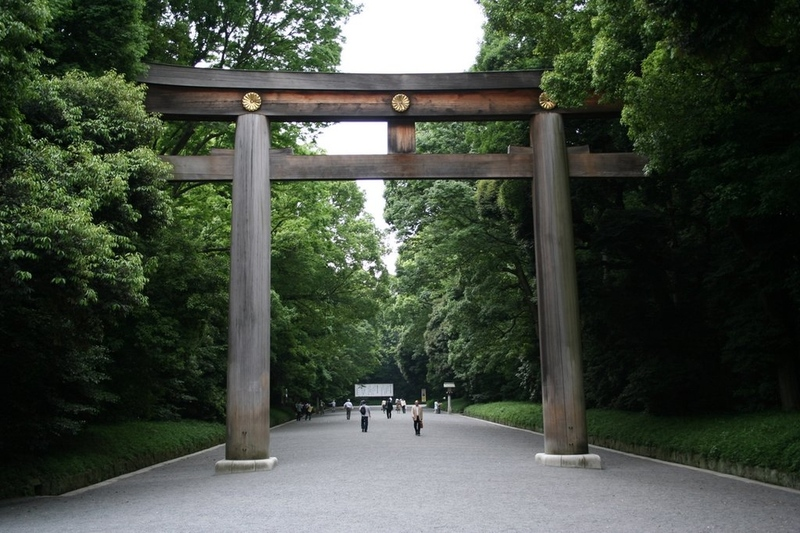

Meiji Jingu
Description
From Wikipedia: Meiji Shrine (明治神宮 Meiji Jingū), located in Shibuya, Tokyo, is the Shinto shrine that is dedicated to the deified spirits of Emperor Meiji and his wife, Empress Shōken.[1][2] The shrine does not contain the emperor's grave, which is located at Fushimi-momoyama, south of Kyoto.
Directions
- Take the Yamanote Line towards
- Get off at Harajuku Station
- Head south with the crowds to exit the station
- Turn right into Yoyogi Park
- Pass under a huge gate and follow the path to the shrine
Tips
- Don't go during lunch to avoid the crowds
- Go during late morning for the best light
- If you're going during New Years, don't